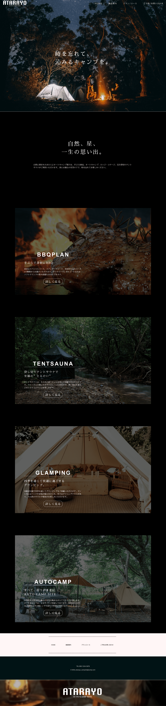
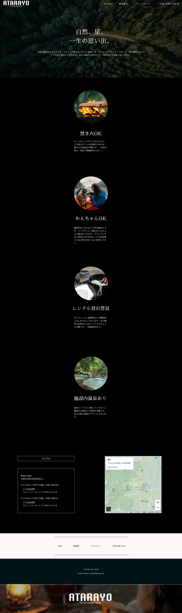
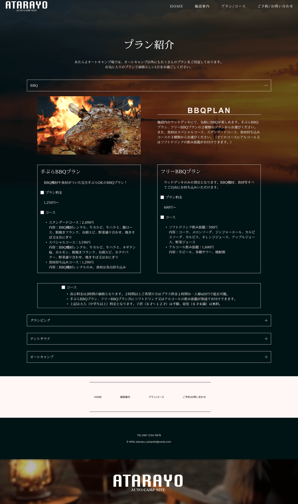
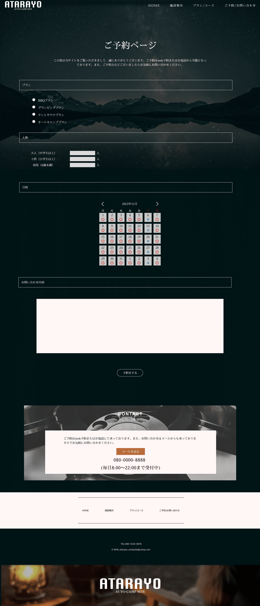

WORKS
logo
Flyer／Banner
-
illustrator
Adobe School在籍時の作品です。
サイズ:1278*1791
Design comp
こちらのページではXD及びFigmaで制作したサイトをご紹介します。
ATARAYO
   Figma
授業内で制作したPC版キャンプサイトの本格的なデザインカンプです。
制作期間:2週間
制作フェーズ
- １．企画-テーマ決めと計4ページに渡るサイト構成の内容まとめ
- ２．設計-サイト構造の確認及び手書きのワイヤーフレームを作成
- ３．準備-使用する画像やテキストなど素材の収集
- ４．制作-デザインツールFigmaを用いたデザインカンプ作業
- ５．完成